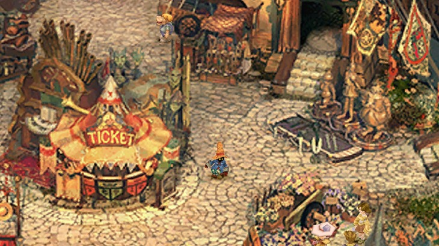

Final Fantasy IX

Game Details
- Release year: 2000
- Genre: JRPG
- Platforms : Playstation, Microsoft Windows, IOS, Android, Playstation 3, Playstation Portable, Playstaion 4, Playstation Vita, Nintendo Switch, Xbox One
- Developer : Square
A Place to Call Home
When the player first boots up Final Fantasy IX, he is welcomed on the main menu by a beautiful piece of music.
This song was written by Nobuo Uematsu and is called A Place to Call Home.
This song describes the heart of Final Fantasy IX through its beautiful notes. Every character in the story is searching for meaning, identity, and, in some way, a place to call home.
As the characters begin to question their existence and their role in a world that can feel unfair or meaningless, the game becomes more than a simple fantasy adventure. This philosophical approach is what makes the story so memorable.
I also want to mention the Italian localization, because it gives many characters strong regional identities inspired by real Italian dialects and stereotypes. This adds even more personality to them and makes the Italian version feel incredibly vivid. In this rare case, the localization does not just translate the game: it makes the experience even more special.